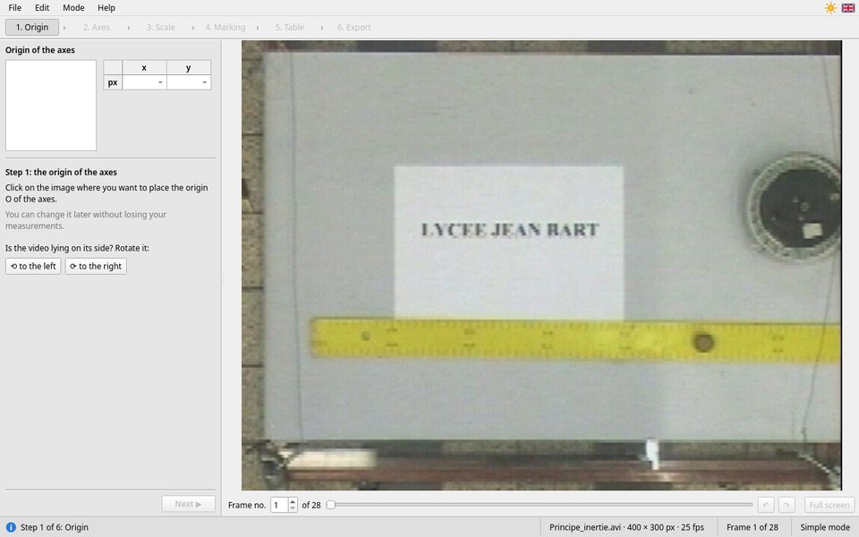
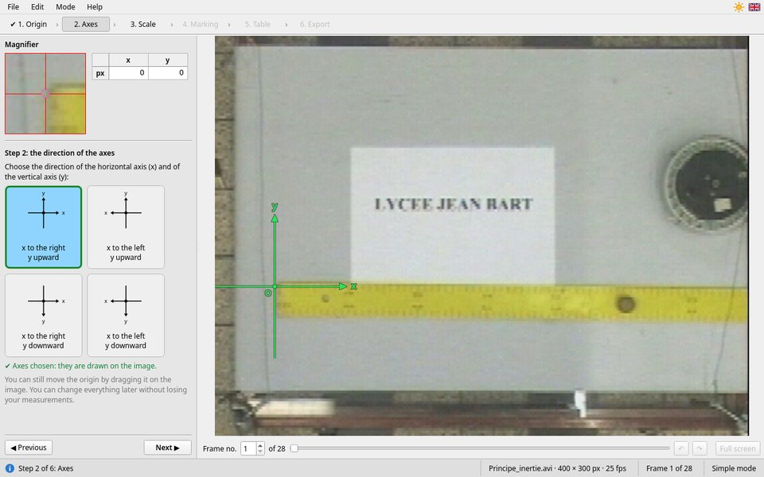
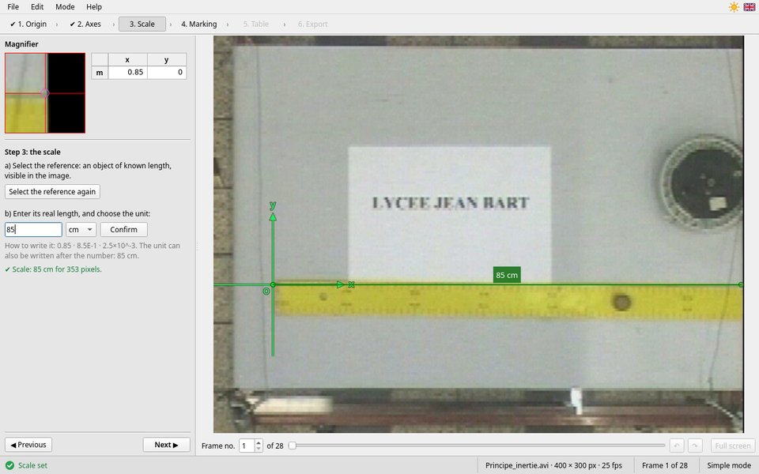
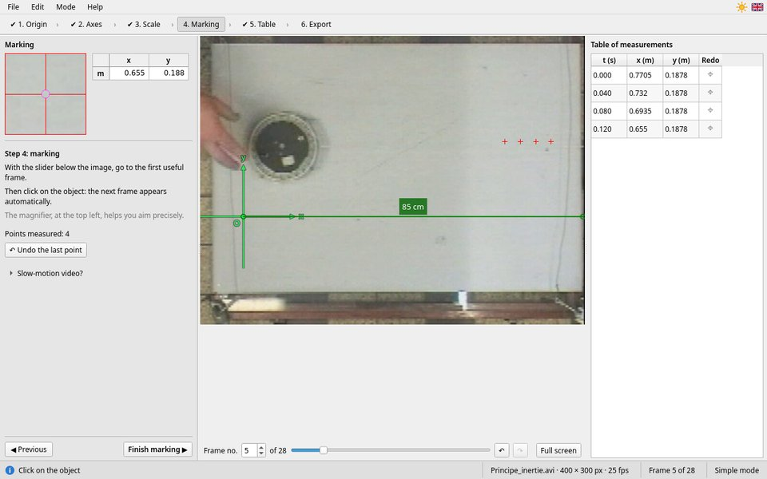
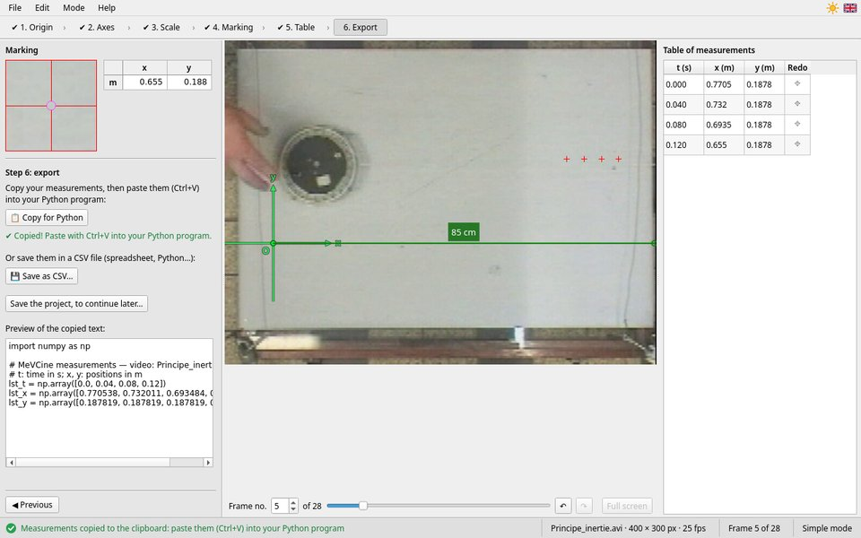

Simple mode, step by step
Six guided steps, for a single object
On the left, at the top, the magnifier and the coordinates of the point under the cursor; below, the instruction of the step; at the very bottom, ◀ Previous and Next ▶. In the middle, the video frame, and under it the choice of the frame. On the right, from step 4 on, the table of measurements. The whole window is described on the Overview page.
The top band shows the six steps: a tick ✔ marks those that are done. You only move on once the step is done (Next ▶ stays greyed out otherwise). Steps 1 to 3 can be revisited even after marking: the measurements are kept, and recomputed.
Step 1: the origin of the axes

Principe_inertie.avi: a puck slides on a table; the yellow ruler is
85 cm long.Click on the frame where you want the origin O: often the starting position of the object, or a point easy to find (the end of a ruler, the ground…). The origin appears in green. To move it, click elsewhere, or drag it: with the button held down, the mouse carries it along.
Is the video lying on its side? The ⟲ to the left and ⟳ to the right buttons rotate it by a quarter turn (only before the scale and the marking).
Use this moment to browse the video with the slider under the frame: find where the motion starts and where it ends.
Step 2: the direction of the axes

Choose the direction of the x axis (to the right or to the left) and that of the y axis (upward or downward). The axes are drawn on the frame at once. For a fall, y downward is often chosen; for a throw, y upward: it is up to you, depending on what you want to compute next.
At this step too, the origin can be dragged: bring the mouse close to the green dot (the cursor becomes a hand), then drag.
Step 3: the scale

- Click on Select the reference. On the frame, click on one end of an object of known length (a ruler, a door, a measured distance), then on the other end. You can also drag from one end to the other. Right-click or Esc: cancel.
- Type its real length, choose the unit in the list (
mm,cmorm), then Confirm (or Enter). You can also write the unit after the number:85 cm.
“✔ Scale: 85 cm for 353 pixels.” confirms; the reference stays drawn on the frame, with its length. Positions are then given in metres, whatever the unit of the reference. How to choose a good reference, and all the allowed ways to write it: The scale.
Step 4: marking

- With the slider (or the ← → arrows), go to the first useful frame: the one where the motion starts. That will be time t = 0.
- Click on the object. The next frame shows up by itself, and the table gains a row. Do it again, frame after frame.
- Look at the magnifier, top left, when you click, and always aim at the same point of the object: its centre, or its front edge.
- ↶ Undo the last point (Ctrl+Z) erases the last point and goes back to its frame; ↷ (Ctrl+Y) brings it back.
- No need to mark the whole video: stop when the motion is over. However, you cannot skip a frame.
- Full screen, under the image (F11): the image fills the whole screen, the magnifier stays visible. Esc goes back to the window.
- Slow-motion video? Open this section if the video was filmed in slow motion, and enter the capture frame rate (for instance 240 frames per second). See Slow motion.
When you are done: Finish marking ▶.
Step 5: the table of measurements
For each marked frame: the time t in seconds, and the coordinates x and y
in metres, in your axes. The first marked frame is at t = 0; with a video at 25 frames per second, the times go up
by 0.040 s each time.
A measurement is wrong? Click on ⌖ in its row: its frame shows up, the point to redo is circled in orange; click on the object. MeVCine then goes back to where you were. Cancel (Esc) gives up.
◀ Resume marking goes back to step 4. Going back to steps 1 to 3 (moving the origin, changing the axes, redoing the scale) recomputes all the measurements, without losing anything: try it, and watch how the coordinates change.
Step 6: export

- 📋 Copy for Python: the measurements go to the clipboard, as three arrays
lst_t,lst_x,lst_y. Paste them with Ctrl+V into your Python program or notebook. “✔ Copied!” confirms. - 💾 Save as CSV…: a file for a spreadsheet or a program.
- Save the project, to continue later…: a
.mevcinefile that keeps everything.
How to use these files: Exporting the measurements. A complete example, up to the Python program: A lab, step by step.
Before leaving, copy or save your measurements. If you forget, MeVCine reminds you; and the work in progress is saved automatically anyway.